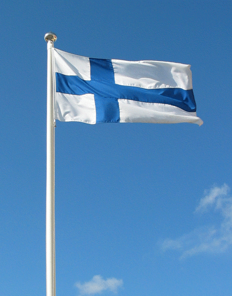

Suomi

Suomen viralliset kielet
Suomen virallisia kieliä ovat Suomi ja Ruotsi, joista enemmän puhutaan Suomea.
Suomen väestö ja pinta-ala
Suomessa asuu noin 5.5miljoonaa henkeä. Suomen pinta-ala on 338 440 km²
Suomen väestö
Suomen rahayksikkö
Suomessa käytetty rahayksikkö on euro €
Bruttokansantuote Suomessa
Suomessa bruttokansantuote oli 269,3 miljardia USD vuonna 2019
Numeroitu lista, Suomen suurimmista kaupungeista
- Helsinki
Lisätietoa Helsingistä
- Espoo
Lisätietoa Espoosta
- Tampere
lisätietoa Tampereesta
- Vantaa
lisätietoa Vantaasta
- Oulu
lisätietoa Oulusta
Suomen luonnon pääpiirteitä
Luonto koostuu muun muuassa seuraavista asioista
- metsätalousmetsistä
- ojitetuista soista
- järvien eliöyhteisöistä
- ihmisen vaikutuksen voimakkaimmin muokkaamista viljellyistä alueista
- kaupunkiluonnosta
Suomen luonto
Suomen yleisimpiä eläinlajeja
- Lintu lajeja on suomessa löydetty 475
- Yleisimmät nisäkkäät ovat karhu, susi, ilves ja ahma
- Kalalajeja on löydetty 71
- vieraslajeja noin 600-1000
Suomen eläimistö
Varhaishistoria
Suomen keskiajan katsottiin pitkään alkaneen 1150-luvulle ajoitetun myyttisen ensimmäisen ristiretken myötä.
Elinkeinot ja asuminen
Ristiretkiaikana rukiin viljely yleistyi ja sen kaksivuoroviljely alkoi 1200-luvun kuluessa. Ristiretkiajan yhteisöt harjoittivat pyyntielinkeinoja asuinalueidensa lähiympäristössä ja myös kaukaisemmilla eräsijoilla.